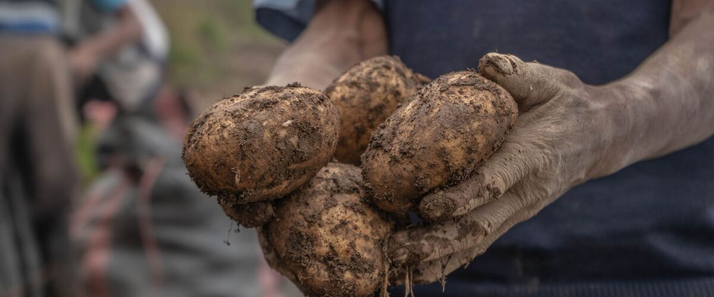

When to plant potatoes in Port Townsend, WA
Plant seed potatoes in Port Townsend Mar 15 – Apr 26.
- Difficulty
- Easy
- Sun
- Full sun
- Spacing
- 12 inches apart in rows 30 inches apart
- Planting depth
- 4 inches deep in a trench
- Frost
- Handles light frost
- First harvest
- About 95 days after planting
Why these dates
Port Townsend's typical last spring frost is March 1. In the west-side valleys, the soil is usually ready for potatoes around March 15.
West-side valleys. The Willamette Valley, Puget Sound and southern Oregon valleys. Long frost-free seasons, but soil stays cold and wet into May, so warm crops wait for warm soil, not just the last frost.
How to grow potatoes in Port Townsend
- Prepare the bed: loosen the soil and mix in an inch or two of compost.
- Plant seed potatoes Mar 15 – Apr 26, 4 inches deep in a trench, 12 inches apart in rows 30 inches apart. Cut large ones into pieces with at least two eyes each.
- As plants grow, pile soil or straw around the stems so the potatoes stay covered.
- Harvest: Dig new potatoes when the plants flower. For storage potatoes, wait two weeks after the tops die back.
Key numbers
- 45°F+Plant when soil is
- Soil 60–70°FTubers form best
- 5.0–6.5 (scab drops at 5.2)Soil pH
- 1½–2 oz, 1–2 eyesSeed pieces
- 1–2 inches a week, evenWater
- Dark, 40–45°FStore
How it works
The plant biology behind the advice above, in plain language.
Start with certified seed potatoes
Potatoes are grown from pieces of tubers, so diseases and viruses travel with them. Certified seed potatoes are inspected and tested for these problems. Grocery potatoes may carry diseases, and some are treated to slow sprouting.
Cut large seed potatoes into pieces of about 1½ to 2 ounces, each with at least one or two eyes, and let them dry a day or two before planting. Pre-sprouting them in a bright, cool room for two to four weeks (called chitting) gives a faster, earlier crop.
Soil pH and scab
Potatoes tolerate acidic soil, with a pH of about 5.0 to 6.5. Common scab, the rough, corky patches on the skin, is caused by soil bacteria that are much less active at a pH of 5.2 or below. So don't lime before potatoes, and avoid fresh manure, which also encourages scab. Keeping the soil moist for the first several weeks after tubers start forming also reduces it.
Temperature and tuber formation
Plant when the soil is at least about 45°F; seed pieces sit idle or rot in colder, wet soil. Tubers form best when the soil is about 60 to 70°F and slow down when it's much warmer. Mulch helps keep the soil cool in hot summers east of the Cascades.
Hilling and green potatoes
Potatoes form on underground stems along the buried part of the plant. Hilling soil or mulch up around the stems as they grow gives more room for tubers and keeps them covered. Tubers exposed to light turn green. The green is harmless chlorophyll, but it signals that solanine, a bitter natural toxin, is building up too. Cut away green parts, and discard potatoes that are heavily green or taste bitter.
Water and late blight
Give potatoes about an inch or two of water a week, as evenly as possible. Uneven watering causes knobby, cracked or hollow tubers. Late blight, the same disease that hits tomatoes, can sweep through potatoes in cool, wet weather. Water at the soil, and if blight appears, cut and bag the tops and wait two weeks before digging so spores on the soil don't infect the tubers.
Harvest and storage
Dig new potatoes once the plants flower. For storage, wait until about two weeks after the tops die back so the skins thicken. Cure them for a week or two somewhere dark and humid at 50 to 60°F, then store them dark at about 40 to 45°F. Colder than that, potatoes turn some of their starch into sugar, which makes them taste sweet and brown too much when fried.
Common questions
When is the last frost in Port Townsend, WA?
Typically March 1. In 9 years out of 10, frost is over by March 23. These are 1991–2020 NOAA climate normals for Port Townsend.
Is it too late to plant potatoes in Port Townsend?
The spring planting window runs through April 26. Later plantings tend to struggle in summer heat.
How long until I can harvest potatoes?
About 95 days after planting. Dig new potatoes when the plants flower. For storage potatoes, wait two weeks after the tops die back.
Can I plant grocery store potatoes?
They may grow, but they can carry diseases and viruses into your soil, and some are treated to slow sprouting. Certified seed potatoes are tested and grow more reliably.
What causes scab on potatoes?
Soil bacteria that are most active in neutral or alkaline soil. Don't lime before potatoes, skip fresh manure, keep the soil moist after tubers start forming, and grow scab-resistant varieties. Scab is only skin deep; the potatoes are fine to eat once peeled.
Are green potatoes safe to eat?
Cut away the green parts and any sprouts. The green signals that solanine, a bitter natural toxin, has built up from exposure to light. Discard potatoes that are heavily green or taste bitter.
Should I store potatoes in the fridge?
No. Below about 40°F, potatoes convert starch to sugar, which makes them taste sweet and darken when fried. Store them dark, around 40 to 45°F, like a cool garage or basement.
Also plant in Port Townsend around the same time
Planting dates for potatoes in nearby areas
- Aberdeen and Hoquiam, WA Apr 1 – May 13
- Forks, WA Apr 1 – May 13
- Port Angeles, WA Mar 15 – Apr 26
- Sequim, WA Mar 24 – May 5
- Long Beach and Ilwaco, WA Apr 1 – May 13
- Portland, OR Mar 15 – Apr 26
Full planting calendar for Port Townsend · Potatoes in every city